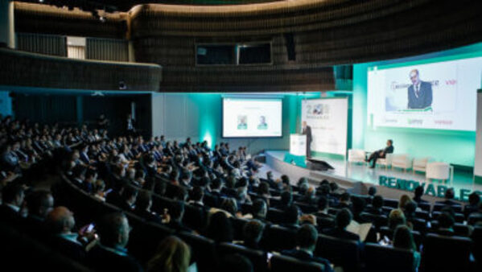
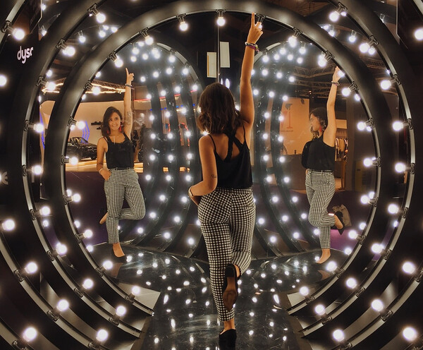
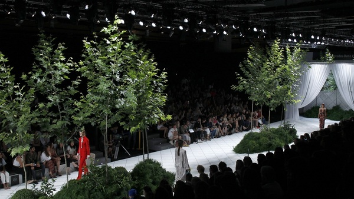
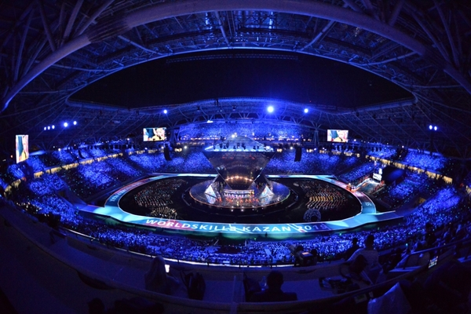

Algunos trabajos...
A continuación, podréis visualizar varios elementos audiovisuales de los distintos proyectos en los que he participado y llevado a cabo. Si bien es cierto que mi carrera profesional abarca un mayor número de eventos de ocio o actos institucionales, considero los siguientes como los más llamativos y gratificantes.
CONGRESO NACIONAL DE ENERGÍAS RENOVABLES
El Congreso Nacional de Energías Renovables tuvo como objetivo servir de punto de encuentro a los profesionales del sector.
La colaboración de los patrocinadores fue fundamental para poder reunir a tantos profesionales y hacer del Congreso una experiencia única. La visibilidad, el refuerzo de la imagen corporativa, el futuro del Sector Renovable y las renovables en España fueron los puntos principales de desarrollo en el evento más importante del sector.
VIDEO

Your browser does not support the audio element.
MERCEDES-BENZ FASHION WEEK 2019
Mercedes-Benz Fashion Week Madrid es la gran pasarela de la Moda española y su mejor plataforma de promoción y difusión en el mundo. Sus desfiles incluyen la presentación de colecciones de los mejores diseñadores de cada momento, tanto consagrados en su programa general, como jóvenes talentos en la pasarela EGO. El anfitrión y principal patrocinador, Mercedes-Benz, ha catapultado la moda española gracias a este escaparate de talento. Con su última Edición 72, volsió a demostrar ser el evento de referencia de la moda española y el gran exponente de la moda de autor en nuestro país. Un lugar de referencia para la industria de la moda, compradores profesionales, diseñadores, clientes y prensa, tanto nacional como internacional.
VIDEO


World Skills Rusia 2019
Considerados como los "Juegos Olímpicos" de la formación técnica y tecnológica, aprendices de 77 países compiten por la medalla de oro demostrando en tiempo real sus habilidades. Durante 4 días, los aprendices se reúnen en un solo espacio para competir en 52 habilidades. Cada uno debe desarrollar un proyecto; el cual es evaluado bajo altos estándares de calidad y normatividad legal.
VIDEO
